Forge · Fireworks × NVIDIA · sealed eval_v2
Database Surgeon: A Verify-or-Abstain Harness for Agent SQL Rewrites
Abstract
Coding agents, BI copilots, and ORM helpers ask language models to “make this SQL faster” and ship the rewrite without reading plans, without fixture checks, and without an abstain path. As agent fleets grow, query volume compounds—retries, tool loops, overnight jobs—so blind rewrites burn warehouse latency, API dollars, tokens, and accuracy together. We treat the harness as the product. On a locked 98-case PostgreSQL 16 development bench, Fireworks gpt-oss-120b run raw (“open-raw”) accepts 46.9% of rewrites and returns 11 wrong answers. The same model behind a verify-or-abstain gate (“open-harness”) reaches 62.2% accept with 0 wrong, at $0.0020/case and 2.9 s optimizer p50. Of the 11 queries raw got wrong, the harness turned 8 into verified faster rewrites and safely kept the original on the other 3. The same gate removes every wrong return for each of the five model pairs we measured, including a local 20B model at $0. Exact McNemar and a 5,000-iteration template-cluster bootstrap agree the gains over raw are real. Against an optional closed frontier-raw baseline (57.1% mean over three trials), the accept lead is not significant at α=0.05; we report it and do not overclaim it.
Index Terms—SQL rewrite, query optimization, LLM agents, verification, McNemar test, cluster bootstrap, PostgreSQL.
I. Introduction and Problem
Agents are a bit dumb about databases. They do not open EXPLAIN. They call a model with the prompt every team ships by default—“make this query faster”—and run whatever comes back. No fixtures. No speedup gate. No abstain.
That habit would be tolerable if query volume were flat. It is not. Every new coding agent multiplies SELECTs. Retries and “try another rewrite” loops stack on overnight jobs. Warehouse CPU and LLM tokens compound together. FinOps surveys already put a large slice of cloud spend in the waste bucket; agent SQL multiplies that baseline.
Without a harness, “faster” is speed theater. Open-raw looks fine on accept rate until you count wrongs: 11 of 98 results returned to the caller were incorrect, and another 6 rewrites were slower than the original. Each wrong answer triggers retries—more tokens, more API spend, more database load, worse accuracy.
The job is therefore not “teach the agent SQL theory.” It is: emit a faster equivalent SELECT, or keep the original.
TABLE I
Status quo versus harnessed rewrite.
| Blind “make it faster” | Harnessed rewrite | |
|---|---|---|
| Agent behavior | One model call, ship rewrite | Propose → verify → time → accept or keep original |
| Accuracy on our bench | Open-raw: 11/98 wrong | 0 wrong returned |
| DB latency | Wrong or slower SQL still burns CPU + retries | ≥20% measured speedup or abstain |
| API $ / tokens | Retries and long prompts on every shape | Fingerprint cache + early abstain cut repeats |
| Who feels the pain | FinOps / platform DBAs as fleets grow | Same people, with a 0-wrong SLA |
Directional value math (assumptions written out): suppose agent traffic adds 10k slow SELECTs/day, each burning 30 s of warehouse CPU at $0.02 per slow query-minute. A safe 20% cut is on the order of $1.2k/day in database infrastructure—before LLM spend. Double the agent fleet and that line doubles. Replace the unit costs with your own; the lever is database plus inference.
Contributions. (1) A sealed, reproducible rewrite benchmark with traps and decoys; (2) a verify-or-abstain harness that reaches 0 wrong returns across five model pairs; (3) paired statistics (McNemar + template-cluster bootstrap) separating real gains from noise; (4) an honest negative result: no significant accept win over a closed frontier model.
II. Benchmark and Protocol
A. Cases
Cases and freeze hashes live under benchmarks/eval_v2/ (cases.jsonl, FROZEN.json). The development split holds 98 cases from 57 templates; the held-out split holds 73 cases from 25 unseen templates. Each case has a kind:
- Rewrite—a faster equivalent exists.
- Trap—a tempting rewrite changes semantics (NULLs, duplicates, empty groups).
- Decoy—already near-optimal; the right answer is to leave it alone.
TABLE II
Development cases by family and kind.
| Family | Rewrite | Trap | Decoy | Total |
|---|
B. Acceptance contract
A rewrite is accepted only if it returns the same rows on all 8 fixture databases (3 hidden from the optimizer), including null-heavy, skewed, and empty-group instances, and its median paired EXPLAIN ANALYZE time is ≥20% lower after warmups. Bag equality checks column names, order, duplicates, and NULLs. Any other outcome is classified as no change (abstain), not faster, regression, incorrect, or invalid.
C. Trials and fairness
All systems see identical case IDs and the same judge. Raw baselines get catalog, guide, and EXPLAIN context but no system-side verify; they are never weakened to flatter the harness. Paired tests use trial 0. Frontier-raw was run for three trials: Table III reports its three-trial mean (57.1%); the paired tests use trial 0 (56.1%).
III. Systems Under Test
A. Baselines
- open-raw—Fireworks
accounts/fireworks/models/gpt-oss-120b, one sample, no verify. Required open baseline. - frontier-raw—optional closed model, same cases and judge.
- rules-only—mechanical rewrites (sargability, UNION ALL, …) at $0.
- fw-fast, fw-nemotron, oss20b, ollama-gpt-oss-20b—additional raw/harness pairs to test whether the gate generalizes across models.
- ollama-qwen3-8b, ollama-qwen25-coder-7b—small local models run raw.
B. Product system: open-harness
Same open model as open-raw, plus:
- Strict verify on the full
EVAL_SCHEMASset (including null/skew). Early versions verified only five schemas and leaked incorrects; that is fixed. - Paired timing gate: ≥20% median reduction on alternating
EXPLAIN ANALYZEruns. - Repair loop and adaptive best-of sampling, first-win accept, early abstain on tiny index-only lookups, and parallel verify.
- Workload fingerprint cache that stores verified positives only.
- Join-graph catalog and rewrite-rule hints in the prompt.
C. Ideas that lost or only partly helped
- Raw open models win on $/case and lose on safety.
- Rules-only is a safe floor, not the product.
- A negative fingerprint cache wiped accepts through fingerprint collisions; removed (accept fell to 53.1% mid-rebench before the fix).
- Nemotron raw leaked 3 incorrects; the pre-strict harness leaked when verify skipped null fixtures.
- Fine-tuning (Muse Glimmer LoRA) stays optional; only verified accepts become training data.
IV. Results
A. Main scoreboard
Table III shows the development board. Opt p50 is optimizer wall time (model + verify), excluding lock queueing and throttle waits. API $ excludes database compute. The 95% interval on accept is a case bootstrap.
TABLE III
Main development scoreboard. † incomplete coverage.
| System | Accept | 95% CI | Wrong | Δ vs raw | $/case | p50 | n |
|---|
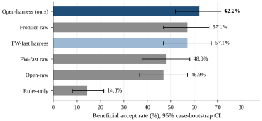
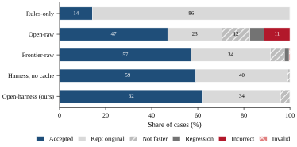
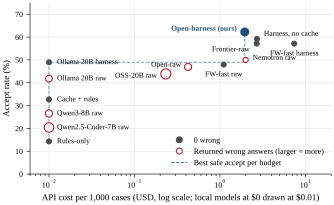
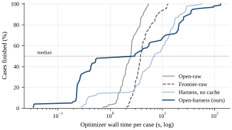
B. Safety and quality
Caught counts wrong candidates the harness generated internally and rejected before they reached the caller. Decoy safe is the share of decoys left untouched or correctly handled. Trap wrong is the share of traps where an incorrect rewrite was returned. Geomean speedup is over all cases, with abstentions counted as 1.0×.
TABLE IV
Safety and quality metrics.
| System | Wrong | Wrong 95% CI | Caught | Decoy safe | Trap wrong | Geomean | Geo 95% CI |
|---|
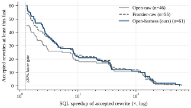
C. Latency, calls, and tokens
The harness spends more model calls than raw (best-of, repair), but the positive cache and early abstain keep its median low. Its tail (p95) is longer because hard cases go through repair.
Open-harness shows an LLM p50 of 0.0 s because half of its cases (49 of 98) are served by the verified cache, rules, or early abstain without a model call; its verify p50 is the cost of re-checking those answers. Raw systems never verify, so their verify time is 0.
TABLE V
Efficiency metrics per case.
| System | p50 | p95 | LLM p50 | Verify p50 | Calls | Out tokens | $/1k |
|---|
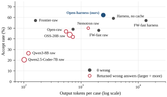
D. Outcomes
TABLE VI
Share of returned-query outcomes.
| System | Accepted | No change | Not faster | Regression | Incorrect | Invalid |
|---|
TABLE VII
Outcome counts by case kind (trial 0).
| System | Rewrite acc. | Rewrite wrong | Trap acc. | Trap wrong | Decoy kept | Slower |
|---|
A trap is “accepted” only when the rewrite still matched every fixture—the harness found a safe variant of a tempting shape. Slower = not faster + regression.
E. Results by family
TABLE VIII
Acceptance rate by query family.
| Family | n | Rules | Open-raw | Frontier | Harness |
|---|
The abstention family is designed so that no rewrite should be accepted; 0% is the correct score there.
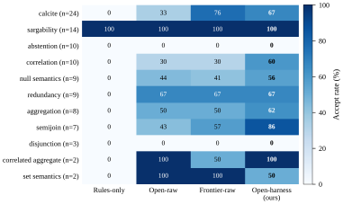
V. Ablations: Does the Gate Generalize?
Each row pair runs the same model raw and then behind the harness. If the gate is the product, wrong returns should drop to zero regardless of the model.
TABLE IX
Raw versus harness for each model. † incomplete coverage.
| Model / variant | Accept | Wrong | $/case | p50 | Calls |
|---|
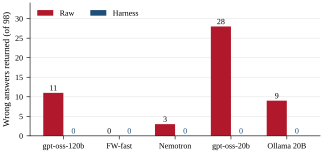
A. Cache ablation
Loading…
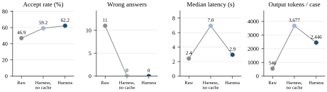
VI. Statistical Tests
Luck moves a 98-case score. We use McNemar on discordant cases and a bootstrap that resamples whole templates, because cases from one template share structure and are not independent.
A. McNemar
Exact two-sided test via binomial on discordant pairs. Agreements are ignored. System A is open-harness. Case-level p-values assume independent pairs, so we also report template sensitivity (one vote per complete template).
TABLE X
McNemar 2×2 for acceptance—open-harness vs open-raw (n = 98).
| Harness accepted | Harness not |
|---|
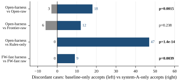
TABLE XI
McNemar on acceptance across baselines.
| A vs baseline | A only | Base only | Both | Neither | p | Call |
|---|
TABLE XII
McNemar on incorrect returns (fewer is better).
| A vs baseline | A only | Base only | Discordant | p | Call |
|---|
B. Template-cluster bootstrap
5,000 resamples of whole templates. A gain is called real only when McNemar (p < 0.05) and the bootstrap 95% CI agree (interval excludes 0).
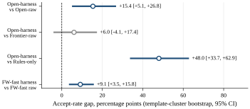
TABLE XIII
Bootstrap accept-rate gap (A − baseline).
| A vs baseline | Mean gap | 95% CI | Clusters | Verdict |
|---|
TABLE XIV
Template sensitivity—open-harness vs open-raw.
| Outcome | A only | Base only | Templates | p | Template counts as positive if |
|---|
VII. Paired Resources
Matched means on the same 98 cases (trial 0). Mean optimizer time includes verification and repair, so it exceeds open-raw even though median p50 (Table III) stays below frontier. The Δ interval is a template bootstrap on (harness − open-raw).
TABLE XV
Paired resource means.
| Measure | Harness | Open-raw | Frontier | H / raw | H / frontier | Δ 95% CI vs raw |
|---|
VIII. Case Studies
Every query open-raw got wrong, and what the harness returned for the same case:
TABLE XVI
Open-raw incorrect returns and the harness outcome on the same case.
| Case | Family | Harness outcome | Harness speedup |
|---|
A. Semijoin: renamed column, dropped join
-- original
SELECT DISTINCT c.id FROM customers c
JOIN orders o ON o.customer_id = c.id WHERE o.amount > 50
-- open-raw (incorrect)
SELECT DISTINCT o.customer_id FROM orders o
WHERE o.amount > 50 AND o.customer_id IS NOT NULL;
-- open-harness (accepted, 4.4x)
SELECT c.id FROM customers c WHERE EXISTS (
SELECT 1 FROM orders o WHERE o.customer_id = c.id AND o.amount > 50);Raw renames the output column (id → customer_id) and drops the join that guarantees each id exists in customers. Bag equality rejects both. The harness keeps the shape and switches to EXISTS.
B. NULL semantics: count(*) is not count(col)
-- original
SELECT coalesce(sum(count_comm), 0) FROM (
SELECT deptno, count(comm) AS count_comm
FROM emp GROUP BY deptno, mgr) t
-- open-raw (incorrect)
SELECT count(*) FROM emp;
-- open-harness (accepted, 1.8x)
SELECT COALESCE(COUNT(comm)::numeric, 0) FROM emp;Raw counts every row, including rows where comm is NULL. The null-heavy fixture exposes it. The harness keeps COUNT(comm) and the numeric output type.
C. Empty-set semantics: ANY versus MIN
-- original
SELECT name, deptno > ANY (SELECT deptno FROM emp) FROM dept
-- open-raw (incorrect)
SELECT d.name, d.deptno > (SELECT min(deptno) FROM emp) FROM dept d;
-- open-harness (accepted, 2.6x)
SELECT d.name, EXISTS (SELECT 1 FROM emp e WHERE d.deptno > e.deptno)
FROM dept d;On an empty emp, > ANY returns false while > (SELECT min…) returns NULL. The empty fixture catches it. The harness rewrite uses EXISTS, which is false on empty input.
IX. Small and Local Models
Small local models are free to run but unsafe raw. The harness makes the local 20B model usable at $0 API cost, at a large latency cost.
TABLE XVII
Local and small models (Ollama, $0 API).
| System | Accept | Wrong | Invalid | Trap wrong | p50 |
|---|
X. Held-Out Split
Loading…
TABLE XVIII
Held-out templates (unseen during development).
| System | Accept | Wrong | Geomean | n |
|---|
XI. Discussion
XII. Limitations
- Held-out coverage. The harness has not yet been run on the held-out split; claims are development-split claims.
- Single primary trial. Most systems have one trial; frontier and the 20B/120B raw baselines have three.
- Synthetic scale. Fixtures are microfixtures on PostgreSQL 16, not warehouse scale. Speedups are not workload-weighted savings.
- Finite equivalence. Matching 8 fixtures is strong evidence, not a proof of SQL equivalence.
- Simulated cascades. Systems marked ‡ in the appendix replay recorded stage outputs and are not independent runs.
- Frontier. No significant accept win over the closed baseline.
XIII. Rubric Mapping
TABLE XIX
Forge rubric—evidence and open caveats.
| Criterion | Weight | Evidence | Open caveats |
|---|---|---|---|
| Benchmark | 40% | Locked 98-dev; +15.3 pp vs open-raw; 11→0 wrong; gate generalizes across 5 models; McNemar + bootstrap | Held-out harness not run; one primary trial |
| Business | 25% | Agent SELECT growth; FinOps math with assumptions; private fingerprint flywheel | No customer interview; value math directional |
| Technical | 20% | Fireworks/NVIDIA path; strict verify; cache; latency levers; eval CLI | Specialist LoRA optional |
| Demo | 10% | Live workbench + this page | ≤60 s video: raw wrong → harness gate |
| Docs | 5% | Write-up, scoreboard, reproduce commands | Regenerate after rebench |
XIV. Reproduce
.venv/bin/python -m surgeon.eval run open-raw --split dev --trials 1
.venv/bin/python -m surgeon.eval run open-harness --split dev --trials 1
.venv/bin/python scripts/compute_paired_stats.py
.venv/bin/python scripts/export_research.py
bash scripts/site/sync.shTraces: benchmarks/eval_v2/runs/<system>/. Paired stats: benchmarks/eval_v2/results/paired_stats.json. Snapshot used on this page: data/research.json (case SHA-256 …).
XV. Conclusion
A harness is enough. Verify-or-abstain turns a corruption cliff (46.9% accept / 11 wrong) into a product SLA (62.2% / 0 wrong), and the same gate zeroes wrong returns for every model we paired. McNemar and the template-cluster bootstrap agree on the gain over raw. The board also leads frontier-raw on point-estimate accept, API $/case, and optimizer p50, but the accept interval versus frontier includes zero. Fine-tuning can wait; the gate is the product.
Disclosure. Built during the November 2, 2026 hackathon with material use of a Cursor agent. No pre-existing work.
Appendix A. All Recorded Systems
TABLE XX
Every system in the development snapshot. † incomplete, ‡ simulated replay.
| System | Accept | Wrong | Geomean | $/case | p50 | n | Trials |
|---|